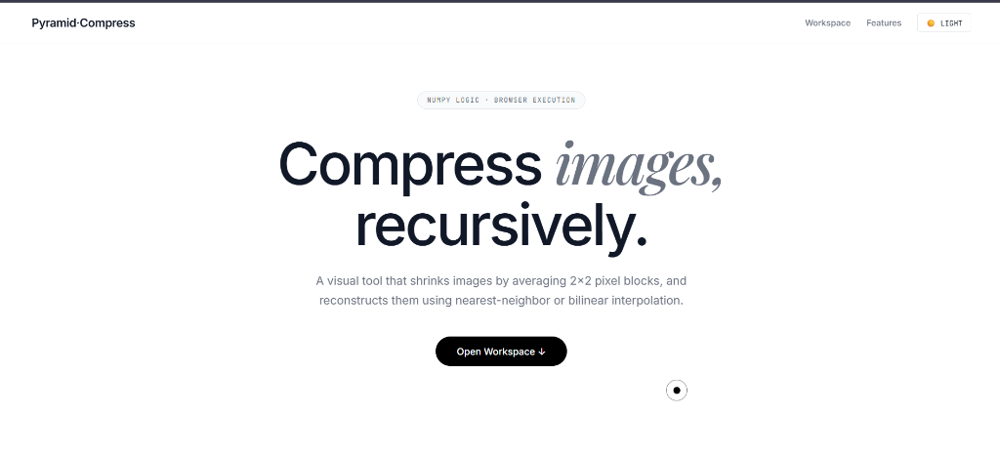
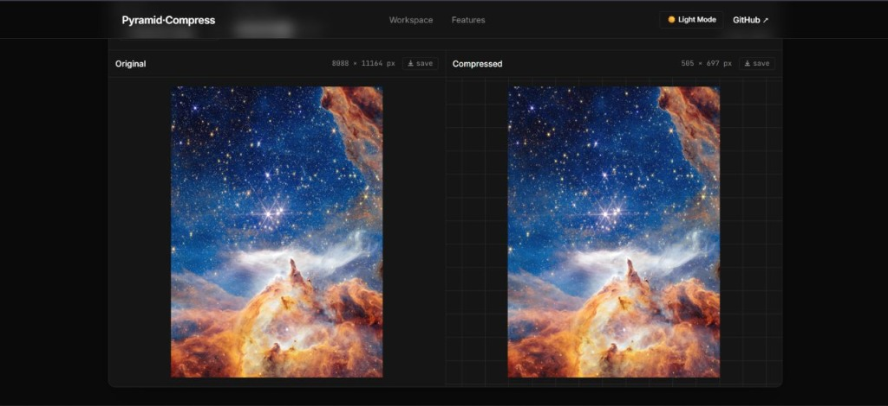

04 / Computer Vision & Algorithms
Pyramid Compress
Image compression system implemented from raw pixel operations using recursive pyramid downsampling, nearest-neighbor or bilinear reconstruction, and objective PSNR quality analysis.


What It Is
Pyramid Compress demystifies image compression by exposing the raw pixel mathematics instead of hiding behind proprietary binary codecs. By averaging 2×2 pixel blocks across recursive depth levels, the image resolution is progressively halved (cutting raw pixel counts by ~75% per level, e.g., 1080p → 540p → 270p → 135p).
The project ships both as an offline Python CLI tool and a 100% client-side web application built with vanilla JavaScript and HTML5 Canvas that executes in user memory with zero external API calls.
Why It Was Built
Most developers treat compression codecs as immutable black boxes. Pyramid Compress was built from first principles to explore the mathematical trade-off between spatial quantization, boundary conditions across arbitrary aspect ratios, and visual reconstruction quality.
By coupling reconstruction algorithms with objective Peak Signal-to-Noise Ratio (PSNR) metrics, it provides an intuitive, measurable sandbox for lossy image compression.
Mathematical & Algorithmic Pipeline
Key Contributions & Engineering
- Arbitrary Aspect Ratio Handling: Designed recursive downsampling logic that handles odd-dimension boundaries without padding distortion.
- Zero-Server Browser Workspace: Implemented the complete 2D array downsampling and bilinear interpolation engine in pure JavaScript and Canvas.
- Metadata Sidecar Protocol: Created
.meta.txtsidecars to store exact level counts and original aspect ratios for deterministic reconstruction. - Comparative Kernel Benchmarking: Integrated real-time PSNR calculation in both Python and JavaScript to scientifically prove bilinear interpolation provides +4 to +6 dB higher structural fidelity than nearest-neighbor.
Results & Security Highlights
Zero-data-collection architecture: uploaded images never touch an external server or network socket. Tested extensively across JPEG, PNG, and WebP formats with sub-second browser reconstruction times.